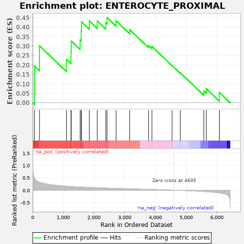
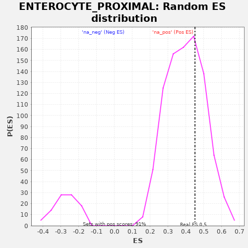

| | | Dataset | al10_v_al5 |
| Phenotype | NoPhenotypeAvailable |
| Upregulated in class | na_pos |
| GeneSet | ENTEROCYTE_PROXIMAL |
| Enrichment Score (ES) | 0.45042455 |
| Normalized Enrichment Score (NES) | 1.1358947 |
| Nominal p-value | 0.3263506 |
| FDR q-value | 0.23598135 |
| FWER p-Value | 0.993 |
Table: GSEA Results Summary

Fig 1: Enrichment plot: ENTEROCYTE_PROXIMAL
Profile of the Running ES Score & Positions of GeneSet Members on the Rank Ordered List
| PROBE | GENE SYMBOL | GENE_TITLE | RANK IN GENE LIST | RANK METRIC SCORE | RUNNING ES | CORE ENRICHMENT | | 1 | Prap1 | | | 57 | 0.502 | 0.1943 | Yes |
| 2 | Cyb5r3 | | | 222 | 0.328 | 0.3014 | Yes |
| 3 | Acsl5 | | | 1102 | 0.161 | 0.2297 | Yes |
| 4 | Mttp | | | 1247 | 0.149 | 0.2676 | Yes |
| 5 | Lpgat1 | | | 1255 | 0.148 | 0.3265 | Yes |
| 6 | H2-Q2 | | | 1546 | 0.128 | 0.3330 | Yes |
| 7 | Ckmt1 | | | 1580 | 0.126 | 0.3787 | Yes |
| 8 | Khk | | | 1589 | 0.125 | 0.4281 | Yes |
| 9 | Cyb5b | | | 1845 | 0.110 | 0.4329 | Yes |
| 10 | Retsat | | | 2103 | 0.097 | 0.4322 | Yes |
| 11 | Fabp1 | | | 2382 | 0.084 | 0.4231 | Yes |
| 12 | Scp2 | | | 2422 | 0.083 | 0.4504 | Yes |
| 13 | Adh6a | | | 2718 | 0.071 | 0.4331 | No |
| 14 | Ckb | | | 3160 | 0.055 | 0.3866 | No |
| 15 | Ephx2 | | | 3775 | 0.032 | 0.3037 | No |
| 16 | Aldob | | | 3886 | 0.028 | 0.2979 | No |
| 17 | Ugdh | | | 4542 | 0.002 | 0.1968 | No |
| 18 | Ms4a10 | | | 4809 | -0.009 | 0.1590 | No |
| 19 | Dhrs1 | | | 5577 | -0.055 | 0.0617 | No |
| 20 | Rbp2 | | | 5658 | -0.062 | 0.0745 | No |
| 21 | Slc5a1 | | | 6083 | -0.116 | 0.0552 | No |
Table: GSEA details [plain text format]

Fig 2: ENTEROCYTE_PROXIMAL: Random ES distribution
Gene set null distribution of ES for ENTEROCYTE_PROXIMAL